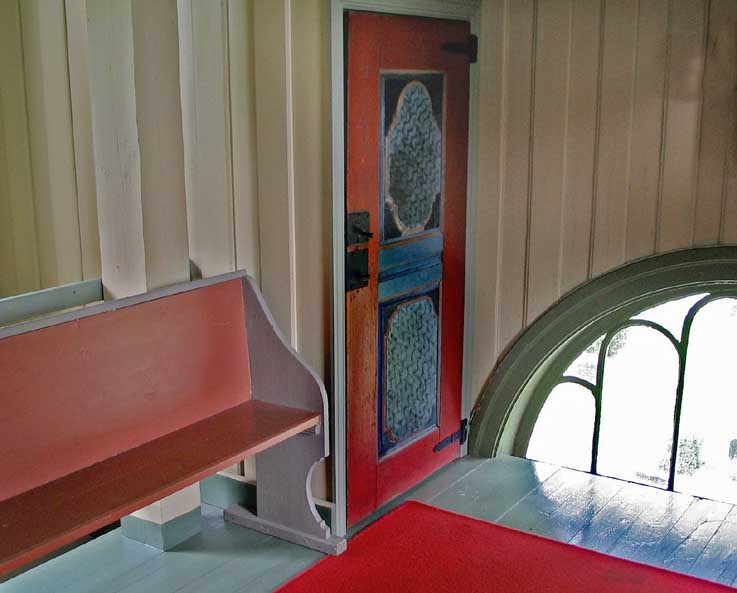
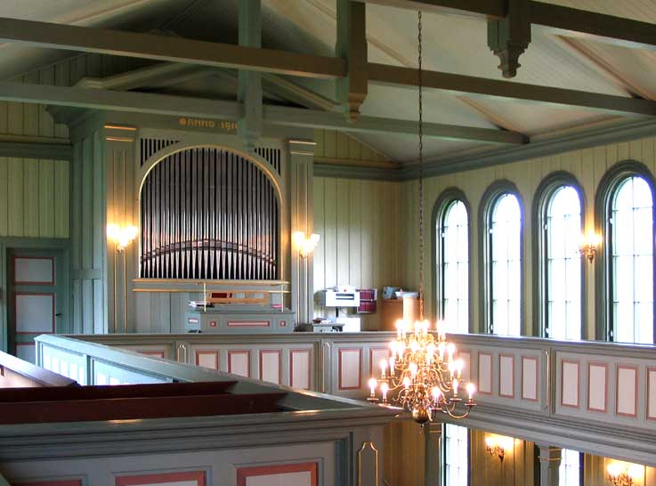

Birkenes kirke
Foto: Torvald Slettebø, Universitetet i Agder, Seniorsenteret
Tekst: Olav Teistedal
Birkenes-gården må ha blitt bosatt tidlig og vært en storgard, siden den har gitt navn til heile bygdelaget og blitt stedet der kirka blei reist. Navnet Birkenes kommer av ordet "birki" (ei samling bjørketrær) og et nes, det neset som dannes ved at Tovdalselva tar en sving vestover. Kirkestedet med kirke og kirkegård ligger som en oase på Birkenes-sletta.
Birkenes kirke er korskirke i tre, bygd i 1858, tegnet av arkitekt Christian Henrik Grosch (1801-1865)
Middelalderkirka
Den nåværende kirka blei bygd i 1858 på samme grunn som ei gammel steinkirke stod. Hvor gammel denne kirka var, vites ikke, men mye tyder på at den må ha vært gammel. I et bryllup på Raen i 1940 kom en gjest over et bilde av en kirke malt med vannfarger. Under bildet stod det: "Prospect av Birkenes Kirke 1845 ". Det er nok en amatør som har malt bildet, men han har vært opptatt av å tegne kirka så naturlig som mulig. Bildet viser ei stilrein langkirke av stein med kirkeskip, korhus og våpenhus, bygd i romansk stil. Denne stilperioden varte fram til ca. 1250. Det er sannsynlig at kirkebygget på Otraneset (Oddernes) har vært mønster for andre kirker på Agder fra 11-1200-tallet, for eksempel kirkene i Tveit og Vestre Moland. Slik også den gamle kirka på Birkeneset.
Det ser ut til at Birkenes fra først av har vært eget soknekall. I alle fall var det egen prest. 30. september 1344 sendte biskopen i Stavanger, Guttorm Paalsson (1343-1350) et offentlig skriv til "Sira Gunnstein, , prestir aa Birkinesi ". Etter svartedauen (1349-50) og fram til 1905 var Birkenes anneks under Tveit prestegjeld og Mandal prosti. Da blei Birkenes sogn eget prestegjeld igjen tilhørende Vest-Nedenes prosti. I 1977 blei Herefoss og Vegusdal sogn lagt til prestegjeldet.
Den gamle kirka hadde to gallerier, ett på nordveggen og ett over inngangsdøra. Ved stoltildelinga i 1776 hadde den 36 benker, 18 på hver side, med plass til 275 voksne personer. Mennene satt på høyre side, kvinnene på venstre. Tjenestefolk og husmenn hadde sin plass på galleriene. Altertavla skal etter tradisjonen ha vært fra Christian IV's tid (1588-1648). Den skal ha hatt utskårne trefigurer og tekster på latin. Hvilken skjebne den fikk da kirka blei revet i 1858, vites ikke. Det samme gjelder prekestolen som skal ha hatt tronhimmel og utskjæringer.
Kong Fredrik 4. (1699-1730) trengte penger etter Den store nordiske krig (1700-1721). Han solgte da kirkene og en del gods som var gitt til kirken i katolsk tid. Birkenes kirke blei solgt til presten Mag. Claudius Tobiesen. Sønnen Christen solgte den videre til allmuen i 1762 for 40 riksdaler.
Så lenge kirka var i privat eie, blei det gjort lite for å vedlikeholde den. Da allmuen overtok, blei det straks satt i gang reparasjoner og oppussing, og nytt utstyr blei skaffet. Ei offerbøsse i tre fra 1765 med innskriften "Til de Offentlig Penge" er fortsatt å se i Birkenes kirke. Disk og kalk fra 1764 er ennå i bruk når det er mange nattverdgjester.
I de trange tidene fram til 1814 blei det gjort lite med kirka, og flere ganger blei det bemerket at tilstanden var dårlig. Etter 1814 blei det romsligere for allmuen, og det kunne gjøres mer med kirka. I 1820 blei det bestemt at tårnet skulle rives og fornyes. I 1826 fikk kirka nytt golv og blei kalket både utvendig og innvendig.
Allerede i 1803 blei det bemerket at kirka var for liten i forhold til folketallet. Dette blei understreket av biskopen under visitas i 1830. Han mente den måtte utvides. Det blei i åra som fulgte arbeidet med mange forslag til løsning. Etter hvert blei spørsmålet om å rive den gamle og bygge ny kirke aktuelt. Tanken om å bygge ny blei forsterket ved at en lov vedtatt i 1851 bl.a. sa at det i hvert kirkesogn skulle være ei kirke som rommet 3/10 av befolkningen. Ved visitas i 1854 blei det vedtatt å bygge ny. Det blei dødsdommen over den gamle. Den blei revet i 1858. Steinen blei brukt til grunnmur under den nye og delvis til kirkegårdsmuren.
Steinen fra middelalderkirka blei brukt til grunnmur under den nye kirka og til kirkegårdsmuren.
Birkenes-gården var prestegods fram til omkring 1850.
Dagens kirke
I 1857 blei det gitt kongelig godkjenning for at den gamle kirka kunne rives og ny bygges. Tanken var å beholde tårnet og sakristiet fra den gamle, men det viste seg å bli vanskelig. Sokneprest S. Dalan skriver i si bok om Tveit kirke også om reisinga av den nye annekskirka i Birkenes: "Våren og sommeren 1858 var det livlig omkring kirkestedet i Birkenes. Fra hver gård komn en mann på pliktarbeide. Garnlekirken var snart borte, og den nye ble reist. Da måtte der også fagfolk til. Byggmester Mikkel Mortensen (Kristiansand) sto for arbeidet, og hadde tømmermenn på daglonn for å utføre det. Tømmer hadde bygda nok av, og fra sagbrukene kom lass med firskjæringer, planker og bord til kirken.
Formannskapet. Ordforer Andreas Solberg, Halvor Tjøntvedt, Mads Vindsland og Ole Nilsen Røinås fiungerte som byggekommite. Kirka er tegnet av arkitekt Christian Henrik Grosch (1801-65). Han tegnet mange kirker og andre kjente bygninger, f. eks. Universitetsbygningene på Karl Johan i Oslo.
Kirka er korskirke. Korsarmene er så korte at sokneprest Bodker helst ville ha kalt den ei langkirke. Den er preget av bysantinsk-romansk stil med klassisisme i eksteriør. Tårnet kan minne om de norske stavkirkene. Det er galleri på begge sider og på tverrsida over hovedinngangen der orgelet nå er plassert. Som ny hadde kirka 760 sitteplasser. Seinere er de redusert til ca. 700. I stedet for å bruke altertavla fra den gamle kirka, blei det satt inn et gulfarga kors med forgylte kanter. Under korset stod det: "Lader Eder forlige med Gud ". Det blei også laget ny prekestol. Derimot blei klokka fra den gamle kirka beholdt.
Dagens kirke blei reist der den gamle middelalderkirka stod. Byggmester Mikkel Mortensen fra Kristiansand ledet arbeidet.
Gården Birkenes må tidlig ha blitt bosatt og hatt en sentral plass i dalen siden kirka blei plassert der, og stedet gav navn til heile kommunen. Navnet kommer av ordet "birki" - ei samling av bjørketrær på det neset som dannes ved at Tovdalselva tar en sving vestover.
Låsene pâ døra fra den gamle kirka er nok laget av en av smedene i bygda.
Det er lite bevart etter den gamle kirka. Døra pâ bildet fungerer som skapdør i dagens kirke.
I trappa foran hovedinngangen lå en gammel gravstein som i 1941 blei satt opp ved sakristiet. Den har følgende innskrift: "Her under huiler s.man Gunder Guttormsøn. Gud gifue hannem en gledelig opstandelse. Ano 1689 den 26 ianvari. Aaste Ulfsdater ano 1673 den 17 febrevari".
Kirka og kirkegården ligger som en oase med store trær på sletta på Birkeneset.
Kirka er omgitt av en velstelt kirkegård. Den er utvidet flere ganger, sist i 1995-96.
Et bilde av gamlekirka, malt i vannfarger i 1845, gir et inntrykk av hvordan kirka var: Ei stilrein langkirke i stein med våpenhus, tårn, kirkeskip og kor, men uten sakristi. Stilen er romansk. Denne stilperioden varte fram til 1250. Trolig var kirka av samme alder og utforming som nabokirkene i Tveit og Vestre Moland og bygd en gang på 11-1200-tallet.
Kirka er preget av bysantinsk-romansk stil med klassisistiske trekk i eksteriør.
Sideinngangen mot sør.
Sakristiet blei utvidet i 1987 og inneholder preste- og dåpssakristi (møterom) og et lite "kjøkken".
Folk var i 1858 fornøyd med den nye kirka. Det eneste enkelte kritiserte, var høyden og den knudrete stilen på tårnet. Under planlegginga blei det bemerket at det høye târnet ville bli vanskelig å vedlikeholde. I ettertid har det vist seg å være rett!
Kirkeklokka fra den gamle kirka gjorde tjeneste til 50-årsjubileet i 1908. Den var liten og spinkel i lyden og passet ikke sammen med de to nye som blei gitt som gave til jubileet. Stolene til de nye klokkene blei laget av Birkenes-snekkeren Åsulv Stoveland.
Til 50-årsjubileet fikk kirka 2 nye klokker i gave. Den største har innskriften: "Fra Ole og Katarine Mollestad 1907. Ære være Gud i det høyeste. Lzck. 2.4. " På den andre står det: "Fra Kristen og Marie Tvede til miune om vaar søn Guthorm Tvede, død 17/6 1905. Halleluja, lov Gud i hans helligdom! Ps. 150.1."
Tårnet har ei utforming som kan minne om de norske stavkirkene.
Kirka hadde som ny 760 sitteplasser. Tallet er seinere blitt redusert noe.
Kirka har galleri på begge langsidene og over sideskipa. Orgelet er plassert over hovedinngangen.
Altertavla i den gamle kirka blei ikke overført til den nye i 1858. I stedet blei det satt inn et gulfarga trekors med forgylte kanter. Til 50-årsjubileet i 1908 blei den nåværende altertavla satt inn. Bildet er en kopi av alterbildet i Jacobskirken i København - "Kristi oppstandelse" - malt av den danske kunstneren Carl Bloch (1834-90). Det er Bloch's elev, nordmannen Lars Osa, som har malt kopien. Under bildet stâr teksta i gullskrift: "Jeg lever og I skal leve."
Rammen rundt alterbildet er tegnet av arkitekt Keyser Frølich fra Kristiansand og utført av Birkenes-snekkerne Åsulv Stoveland og Olaus Tveide.
Alterduken er en gave fra Birkenes Bondekvinnelag i 1963.
I 1926 blei det anskaffet 80 særkalker. I 1950 fikk kirka 50 til som gave.
Nattverdsettet som til vanlig er i bruk.
Disken nederst til høyre er fra 1664.
Nattverdkalk i sølv med innskrift: "B.K. 1664".
På knottete på stettet til nattverdkalken fra 1664 står det med en bokstav på hver knott ' J E-S-U-S ".
Den store bibelen på alterbordet blei gitt av Birkenes sanitetsforening til 100-årsjubileet

Birkenes kirke har tekstiler i alle liturgiske farger. Det grønne antependiet er tegnet av Svenn A. Hansen og laget av Liv Mollestad.
I 1950 fikk kirken elektrisk belysning. Lampetter og ei lysekrone blei installert. Ved 100-årsjubileet til Birkenes Sparebank i 1969 fikk kirka som gave ei lysekrone til i samme stil.
To sju-arma lysestaker er gaver. Den ene fra Birkenes Bondekvinnelag til 100-årsjubileet.
Døpefonten er en gave fra Birkenes Husmorlag til 100-ârsjubileet.
Dåpsfat i messing og håndlaget kobberkanne til dåpsvannet.
Dåpsfat i messing med speidermotiv fra Det gamle testamente. To speidere kommer tilbake fra Kanaans land med en stor drueklase på ei stang mellom seg.
2 brudestoler og 6 andre stoler i samme stil gitt som gave ved 100-årsjubileet.
Nytt trekk med samme mønster blei brodert og stolene stoppet om i 1995.
Trappa opp til prekestolen.
Opprinnelig var prekestolen plassert høyere i forhold til menigheten.

Orgelet fra 1910 blei bygd av Olsen-Jorgensen orgelfabrikk. Det har 9 stemmer, 2 manualer og pedal.
Omkring 1970 blei tre av de opprinnelige stemmene skiftet ut med andre. Ved restaurering avsluttet i 1999 blei de opprinnelige stemmene satt inn igjen.
Hovedinngangen sett fra koret.
Nytt teppe blei i 2002 finansiert bl.a. med en gave fra Birkenes Sanitetsforening.
Sideskipet mot nord.

På den ene sida bak i kirka er det gitt plass til bord og stoler til bruk for småbarn under gudstjenestene, eller til styremøter. Benkeputer blei anskaffet til 125-årsjubileet i 1983.
Pâ venstre side når en kommer inn hovedinngangen, er det gitt plass for lysglobe.
Offerbøsse i tre fra 1765 med innskriften "Til de offentlig penge".
Birkenes Kirke - På Kirkevandring i Aust-Agder
Prestegjeld: Birkenes
Prosti: Vest-Nedenes
Kommune: Birkenes
Innviet: 1858
Birkenes er en vidstrakt skogsbygd mellom Lillesand og Kristiansand. Den har store heistrekninger med elver og idylliske vann. I flere hundre år hørte Birkenes til Tveit prestegjeld i Vest-Agder, men fra 1905 ble det eget prestegjeld. Siden 1967 er det slått sammen med Herefoss og Vegusdal til Birkenes kommune og fra 1977 Birkenes prestegjeld. En vet ikke når Birkenes fikk sin første kirke, men i 1344 forteller et gammelt dokument at sira Gunstein var «prestr a Birkenesi». Antagelig var kirken adskillig eldre. Den må ha vært en av de vanlige langkirker i stein med kortilbygg og våpenhus. «Kirkestolen» forteller at den fikk nytt våpenhus av stein i 1660-62. I 1680-årene ble tårnet reparert og kirken kalket utvendig og innvendig.
Under bispevisitas i 1830 ble det påpekt at kirken var for liten, og ved visitas i 1854 ble det vedtatt å bygge ny. Det ble dødsdommen over den gamle som ble revet. Steinen ble brukt til grunnmur for den nye og delvis til kirkegårdsmuren.
Sokneprest S. Dalan har i sin interessante bok om Tveit kirke, også tatt med Birkenes kirke fram til 1905 da Birkenes ble utskilt fra Tveit. Fra hans bok siterer vi: «Våren og sommeren 1858 var det livlig omkring kirkestedet i Birkenes. Fra hver gård kom en mann på pliktarbeide.Gamlekirken var snart borte, og den nye ble reist. Da måtte der også fagfolk til. Byggmester Mikkel Mortensen sto for arbeidet, og hadde tømmermenn på daglønn for å utføre det. Tømmer hadde bygda nok av, og fra sagbrukene kom lass med firskjæringer, planker og bord til kirken. Formannskapet: Ordfører Andreas Solberg, Halvor Tjønstvedt, Mads Vindsland og Ole Nilsen Røinås, fungerte som byggekomité».
Den nye kirke er tegnet av den kjente arkitekt Chr. H. Grosch og er en korskirke med over 700 sitteplasser. Den er preget av bysantinsk-romansk stil med klassisisme i eksteriør. Tårnet i vestenden kan minne om stavkirkene. Kirken ble vigslet av biskop von der Lippe 1. des. 1858 med assistanse av stiftsprost Lassen, prost Friedrichsen med flere. Det var stor tilstrømning av folk og en avdeling artillerister var utkommandert som ordensvern. Kirkens interiør var enkelt. På altertavlen sto et kors med innskriften: «Lad eder forlige med Gud». Til 50-årsjubileet i 1908 fikk kirken en vakker altertavle, «Oppstandelsen», malt av Lars Osa. Det er en kopi etter original i Jacobs kirke, København.
Kirken ble på denne tid malt både utvendig og innvendig. Samtidig fikk den nytt orgel og to nye kirkeklokker som gave fra Birkenes sparebank og private. I Birkenes kirke opplevde en 23. okt. 1904 midt under gudstjenesten et jordskjelv som gikk over deler av landet. Hele huset knaket i bjelkene som om bord i et skip i sjøgang. Mange gråt og det ble en alvorlig stund for alle. Presten Tybring la alle på hjertet å bygge sitt håp på ham som kan styrte hus av menneskehender, men som også kan bygge det hus som varer evig.
I sokneprest Gautestad's tid ble koråpningen gjort bredere ved å fjerne rekkverket på sidene, og trappen ble utvidet i samsvar med dette. Samtidig ble prekestolen senket. Til 100-årsjubileet i 1958 ble kirken pusset opp og fikk friskere farger innvendig. Malermester Cay Hultmann fra Kristiansand sto for malerarbeidet etter forslag fra restaureringskonsulent Finn Krafft. Kirken fikk elektrisk oppvarming, installert ved Olav Mollestad. Snekkerarbeidet ble utført av Gunvald Tobiassen, Erik Birkeland og Ivar Tveide. Jubileet ble feiret med festgudstjeneste ved biskop Johs. Smidt, sokneprest Nortvedt og tidligere Birkenes-prester.
I de senere år har kirken fått nytt sakristibygg med prestesakristi, dåpssakristi og sanitæranlegg. 125-årsjubileet ble feiret i 1983 med festgudstjeneste ved prost Jacobsen, sokneprest Otto E. Hansen og tidligere Bir-kenes-prester. Jubileumsgaven varputertil kirkebenkene. På festsamværet samme dag på Birkeland folkehøgskole, talte biskop Utnem og Birkenes-prestene Gautestad, Nortvedt og Hermansen bar fram hilsener. Den store hvitmalte kirke er omgitt av en velstelt kirkegård. Fra tårnet har klokkene ringt helg og høgtid over bygda i over 125 år. Og den store kirke har hatt den glede å ha den vakreste pryd en kirke kan ha: En menighet som finner sin plass når klokkene kaller. - Bjarne Karsten Nenseter